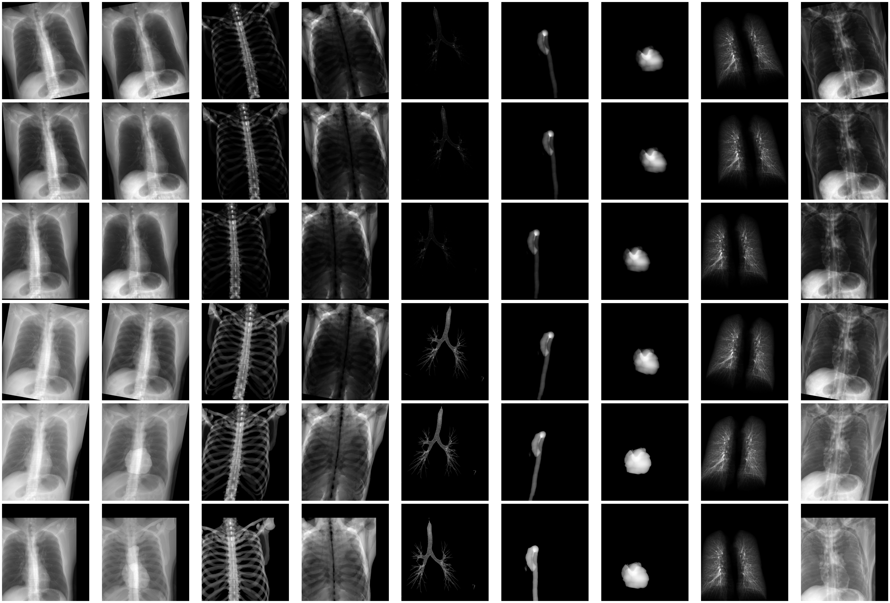
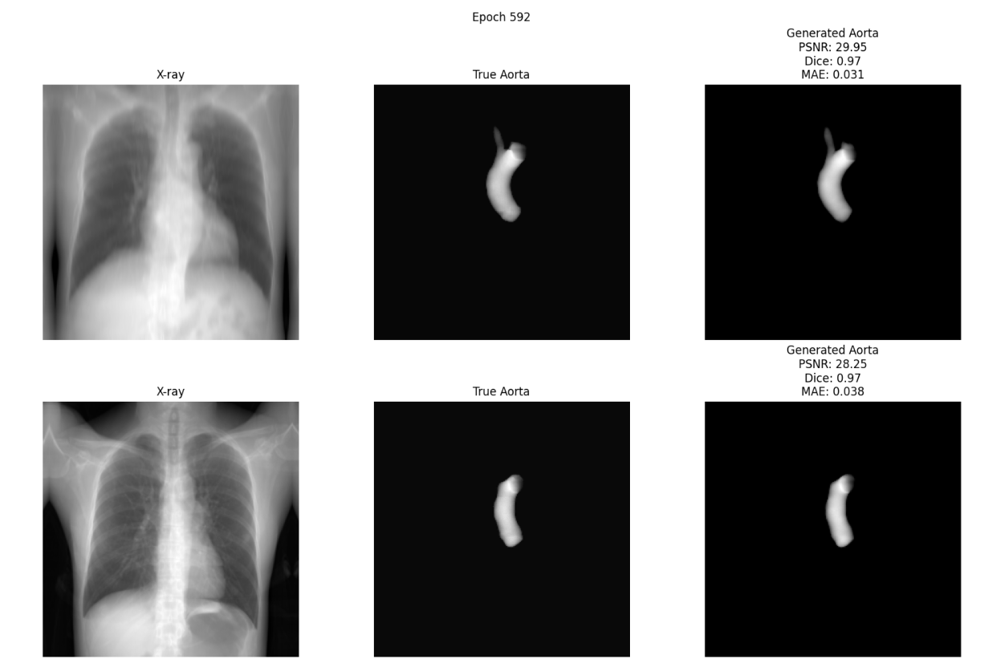

DeepCatch X
AI-Powered X-ray Analysis Platform for Aortic Disease Detection

AI-Powered X-ray Analysis Platform for Aortic Disease Detection
DeepCatch X is a medical imaging platform that screens for aortic disease from standard chest X-rays. The production system uses conditional diffusion models for 2D aorta extraction, then derives 3D diameter measurements from the generated projections. A distributed Ray inference pipeline achieves 100x daily throughput improvement.
Key production achievements include processing 2.3M+ chest radiographs, a 76% codebase reduction, an R-to-C++ BioAge port, and Nuitka-compiled standalone deployment. Beyond what’s deployed, the project includes a proposed Stage 2 architecture for 3D volumetric reconstruction using custom Latent Diffusion Models.
This project spans production deployment and forward-looking research. Everything below is clearly marked.
Building a clinical-grade aortic disease detector required assembling one of the largest paired X-ray/CT datasets in this domain — 100TB+ across domestic hospital partnerships and international data vendors.
Primary training data came from Seoul National University Hospital (n=50,000) and the National Lung Screening Trial (n=13,895). External validation used three independent hospital cohorts (n=16,544) with strict exclusion criteria for interreader discrepancy, incomplete aorta coverage, and CT quality issues.

Supplementary datasets were sourced from international medical data platforms to increase pathological diversity: Gradient Health, Segmed, and Protege.
Beyond the research dataset, the deployed Ray inference pipeline has processed 2.3M+ chest radiographs (CR) in production — running all 14 segmentation and measurement modules per case. The original sequential code processed 2–3K cases/day; the optimized pipeline achieves 200–300K cases/day.
Multi-organ segmentation masks (lung, bone, aorta, airway, heart) enabled targeted augmentation strategies, generating diverse training variations while preserving anatomical consistency.

The core research contribution is a two-stage generative pipeline: Stage 1 extracts 2D aorta projections from X-rays using conditional Diffusion, and the proposed Stage 2 reconstructs 3D volumes from those projections using a custom Latent Diffusion Model.

Direct 3D diffusion on 128³ volumes is memory-prohibitive (~48GB for training). The LDM approach compresses volumes to a 256-dim latent space via a 3D VAE, then runs diffusion in that compact space. A novel Projection2Dto3D network bridges 2D features to 3D latent representations. The denoiser supports both a UNet3D backbone and a Diffusion Transformer (DiT) alternative with 3D patch embeddings, Flash Attention, and window attention for local context.

Processing large-scale datasets delivered on-site via SSD/HDD requires high throughput across heterogeneous hardware. The Ray-based pipeline orchestrates 14 modules as a DAG of independent actors with automatic scheduling and zero-copy data sharing.


Shipping deep learning to hospitals means standalone executables, no Python runtime, and IP-protected binaries. A major refactoring effort eliminated dead code and unified the architecture before Nuitka compilation.
Compiled to standalone executables with bundled CUDA/PyTorch dependencies via Nuitka. Model inference accelerated with TensorRT compilation, ONNX export, and FP16 precision. CdsPyEncrypt for source code protection in commercial deployments.
The platform estimates biological age from chest X-ray biomarkers, outputting 52 clinical fields including risk scores and life expectancy. The original R algorithm was ported to 1,850+ lines of production C++ and compiled into a shared binary for integration into the deployment pipeline. Achieves numerical equivalence to the original R implementation.